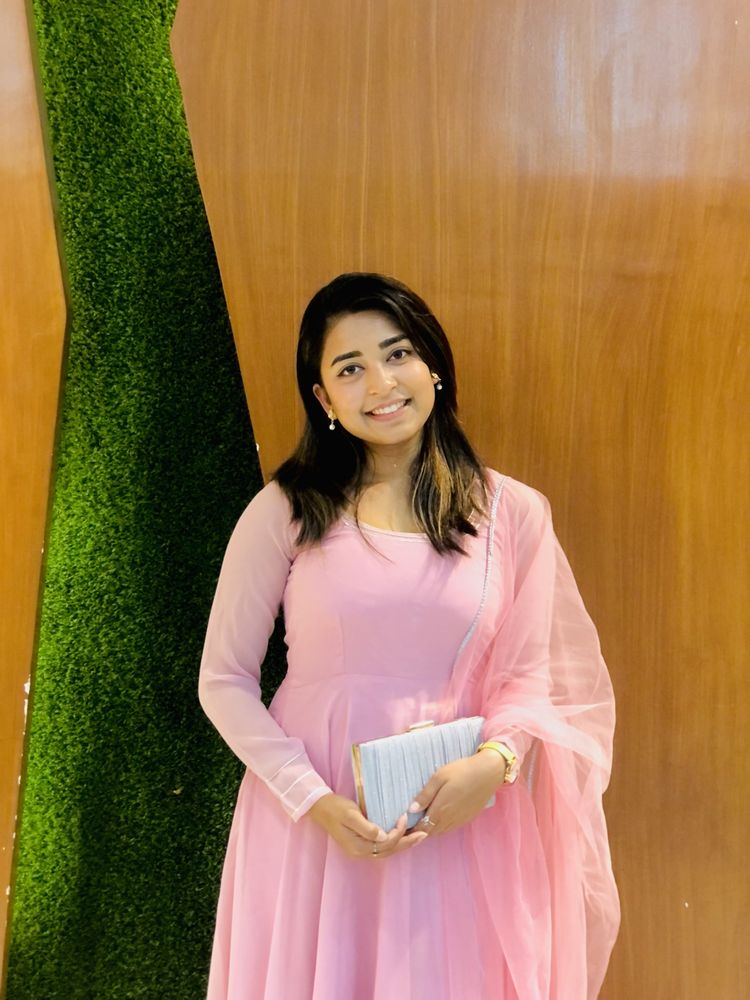
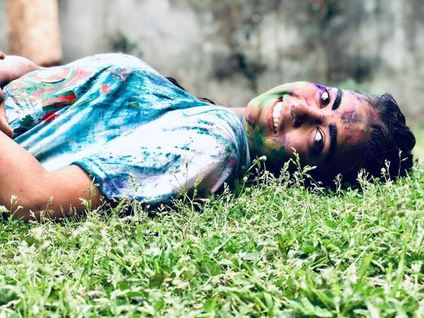
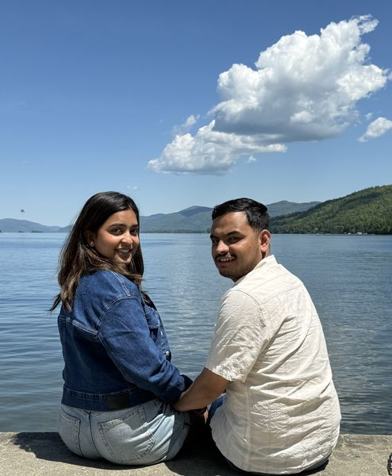
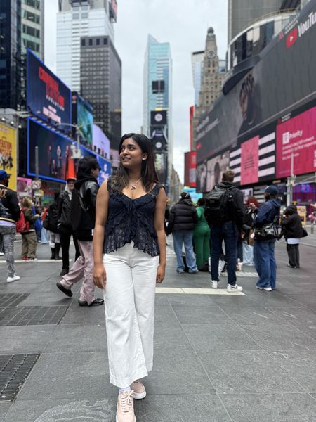
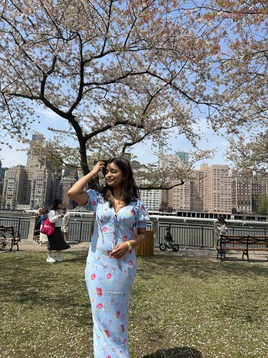
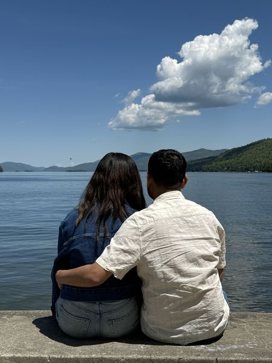
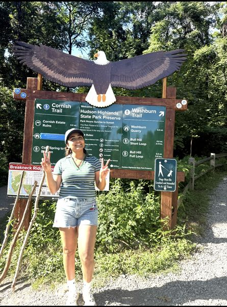

My story
About My World
A girl from Nepal, now living in New York, documenting every beautiful moment along the way.

Who I am
Living Colorfully
I grew up in Nepal surrounded by mountains, festivals, and a culture rich with colour and warmth. Every Holi celebration, every mountain view, every family gathering left a mark on who I am.
Moving to New York City was a leap into a world of skylines, cherry blossoms, and endless possibility. This vlog is my way of bridging those two worlds — sharing the beauty I find in both places and all the adventures in between.
From sunflower fields to lake shores, from Times Square to Himalayan gardens — I believe life is best lived with curiosity and a camera in hand.
Holi taught me joy is worn on your skin — unapologetically.
Tradition, festivals, and ritual — the living memory of a people.
Leave home to understand it. Return to remember what matters.
The best photos always have someone beside you, or cheering you on.
The journey so far
My Story
Where It All Began
Grew up surrounded by the Himalayas, celebrating Holi and Dashain, finding beauty in everyday life. Nepal shaped everything I am.
New York City
Arrived in New York City — overwhelmed by the skyline, energised by the pace. Started this vlog to document the culture shock, the wonder, and the joy.
Exploring Together
Lake George, Hudson Highlands, cherry blossom season, sunflower fields — found the beauty of the northeast one adventure at a time.
Still Going
Bridging two worlds — Nepal and New York — through stories, photos, and genuine moments. Still learning, still exploring, still colourful.
✦ Moments from my world ✦





